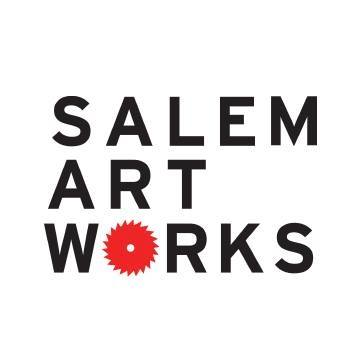

Sustainably Managed Vineyard in the Upper Hudson AVA growing French-American grapes since 2016.
You can find us on the trail, on our website www.southdominionvineyard.com or on Facebook
166 Brownell Rd
Cambridge, NY 12816
(518) 291-8882
info@southdominionvineyard.com

Salem Art Works in beautiful upstate New York supports emerging and established artists dedicated to creating new, progressive work, and promotes understanding and appreciation of contemporary art within the region.
You can find us on the trail, on our website www.salemartworks.org/ or on Facebook
During the trail weekend we'll be having a music program, for details checkout Music On the Hill
19 Cary Lane
Salem, NY 12865
(518) 854-7674
info@salemartworks.org